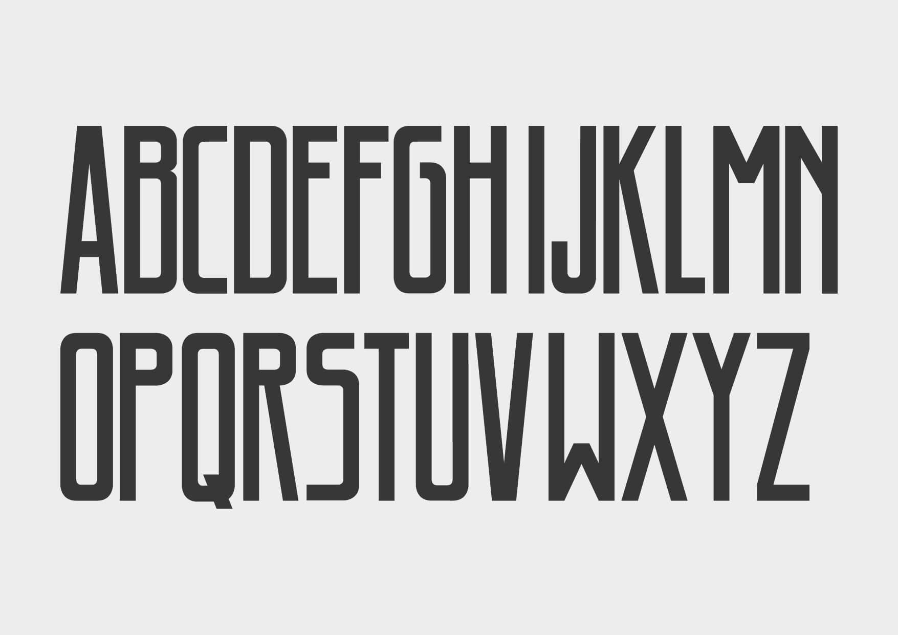
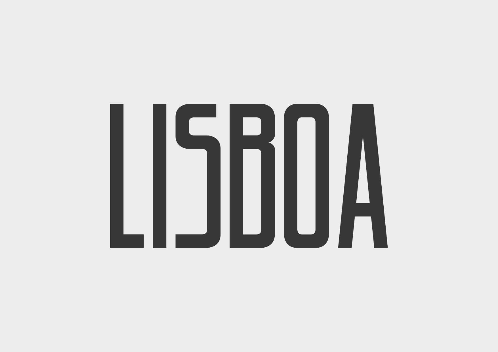
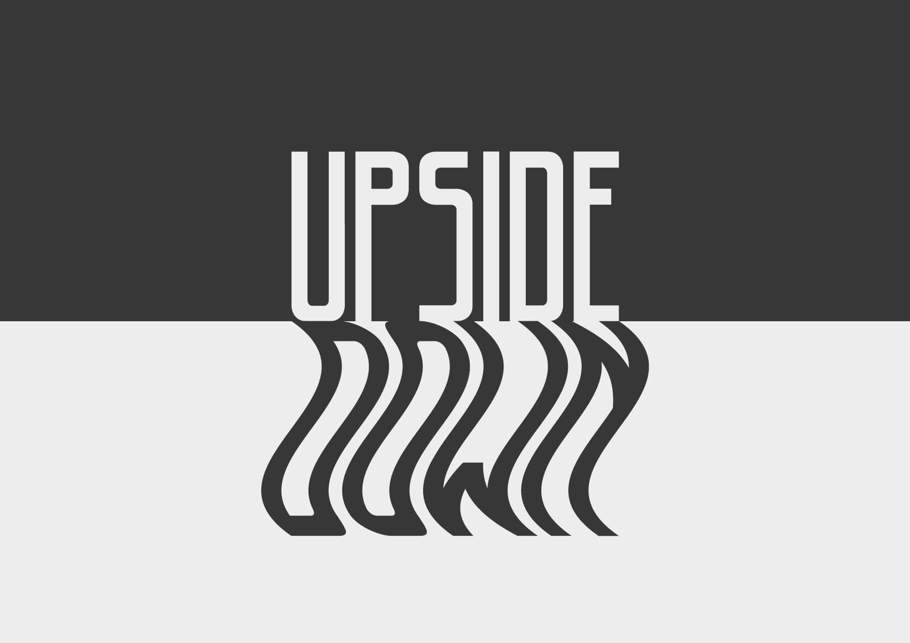
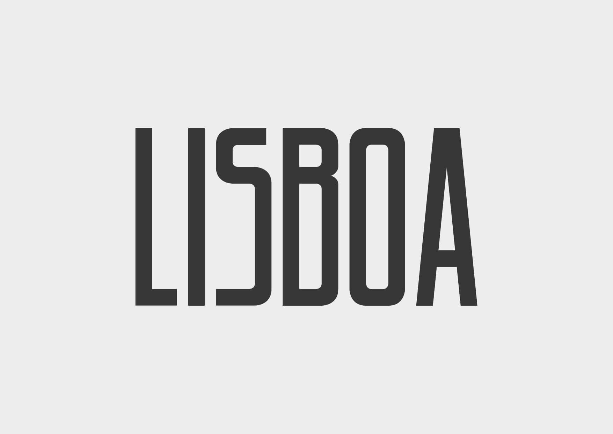
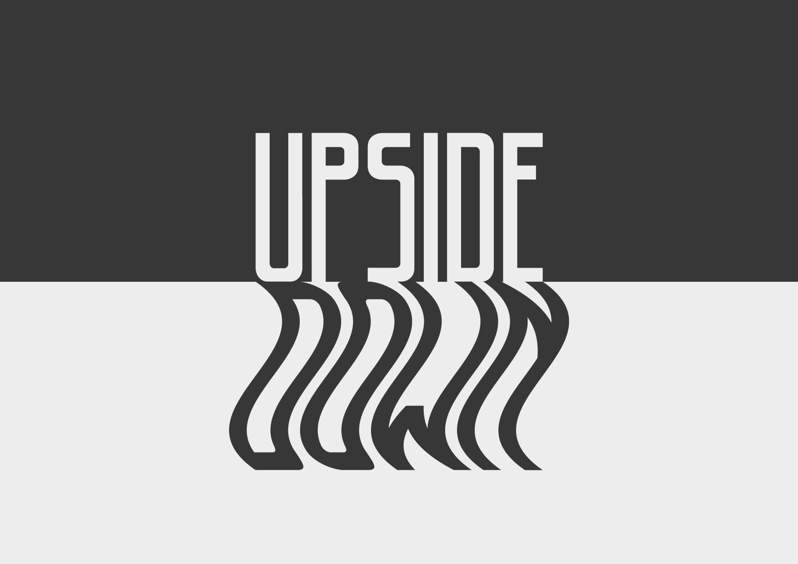
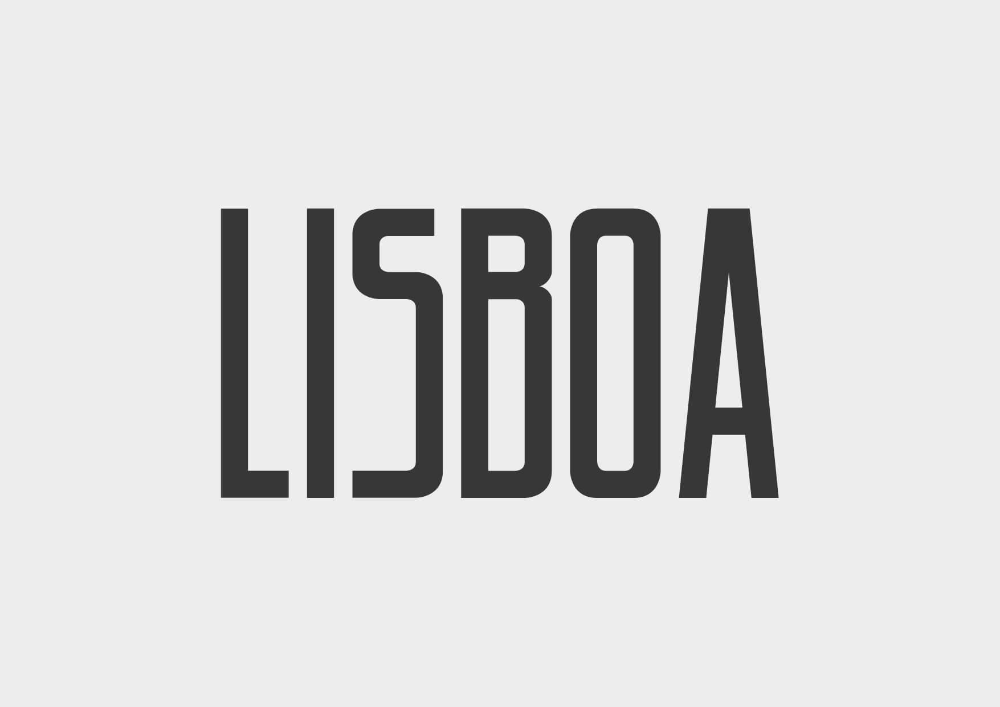
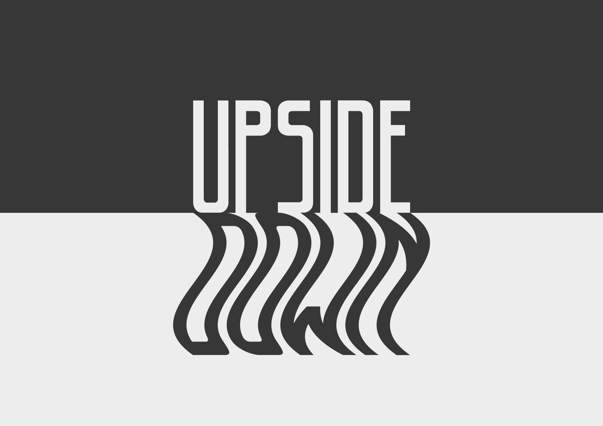

1# Type
2013 /Type Design /Graphic Design course work
Creation of a font, using as an inspiration, the vintage typography around Lisbon. It was made during my Typography class, as a part of my Graphic Design course, at Restart.


 





go back
back to top